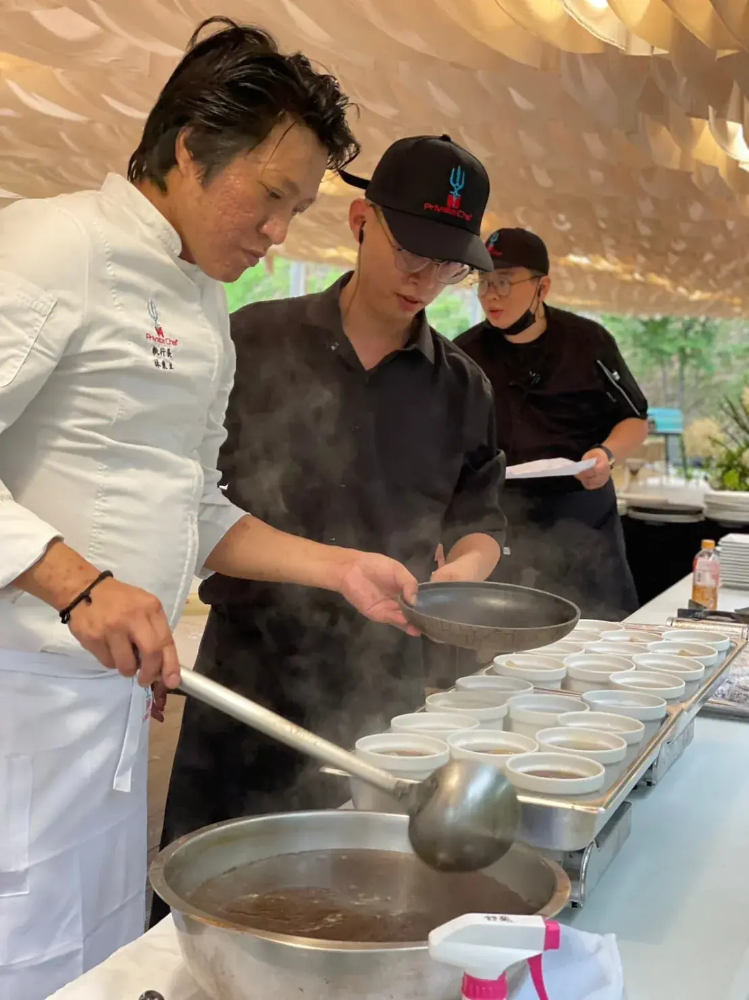

不少人聽到「家庭聚餐私廚」會直覺聯想到豪宅等級的大場面，但實際上這是最貼近日常需求的私廚服務類型之一——重點從來不是排場，而是讓全家人都能好好坐下來吃飯。
家庭聚餐從 4、5 人的小家庭到三代同堂 15 人以上都能安排，菜色份量與道數會依人數調整，不需要達到特定規模才能預約。
家庭聚餐不一定要走高端路線，可以保留家人熟悉的口味，再加入一兩道有記憶點的菜色，讓平常的聚餐多一點儀式感。
家中有長輩壽宴、小孩滿月抓周、或單純想在特殊節日不用出門張羅的家庭，都是家庭聚餐私廚最常見的使用場景。
家庭聚餐的規格通常不需要到VIP等級的食材配置，費用會比商務宴客或豪宅派對親民不少，實際報價可以參考私廚價格頁面。
如果你正在考慮家庭聚餐請私廚，歡迎直接聯繫舒苑團隊，會有專人依你的實際人數與需求提供更詳細的說明與建議。
提供活動日期、人數與場地，我們將提供最適合的私廚方案與報價建議。